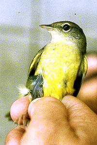
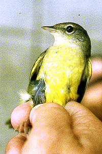

Mourning Warbler Oporornis philadelphia
25 Sep 97, Exposition Park, LA 1997-157
© 1997 Kimball L. Garrett

Mourning Warbler Oporornis philadelphia
25 Sep 97, Exposition Park, LA 1997-157
© 1997 Kimball L. Garrett
| These photographs accompany records that have been recently submitted to the committee.This record
has been ACCEPTED.  Mourning Warbler Oporornis philadelphia 25 Sep 97, Exposition Park, LA 1997-157 © 1997 Kimball L. Garrett Mourning Warbler Oporornis philadelphia 25 Sep 97, Exposition Park, LA 1997-157 © 1997 Kimball L. Garrett |